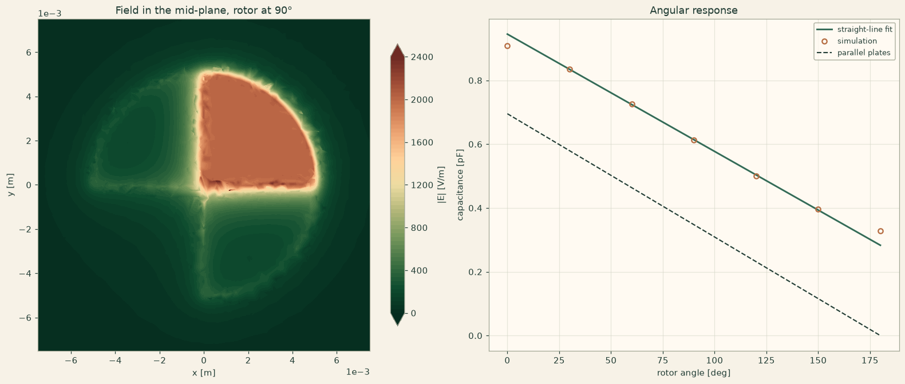
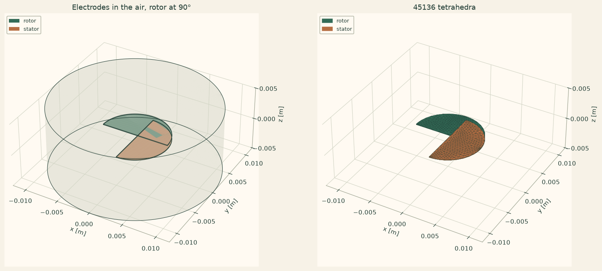

Docs › Examples › Trimmer capacitor with a rotating electrode
Electrostatics · 3D
Trimmer capacitor with a rotating electrode
An air-gap trimmer whose half-disc rotor turns over a half-disc stator, with its capacitance against the rotor angle.
Run locally with OneSimulation. The example downloads are free. Running them requires an activated runtime. Runtime Alpha 0.2.1a7 · CPython 3.13 on macOS (Apple Silicon), Ubuntu 22.04 (x86-64), and Windows x64. Installation and activation · View pilot plans. Scope of the reference checks.

What it computes
OneSimulation reads the air around the two electrodes for seven rotor angles from STEP files, solves the 3D Laplace equation with quadratic tetrahedra and takes the capacitance from the charge on the rotor; charge balance and a mesh study at 90 degrees check the solution. The script that builds the STEP file comes with the notebook.
What it checks
Between 30 and 150 degrees the capacitance falls linearly within 0.32 % of the full-overlap value, with a slope of 0.211 pF/rad against 0.221 pF/rad for parallel plates (-4.8 %) and a constant fringing share of 0.28 pF; rotor and stator charges balance to 1e-13 and the 90-degree value changes by 0.6 % on the last mesh refinement.
Geometry
The notebook starts at the import of the CAD files trimmer_capacitor_rotation.step, trimmer_capacitor_rotation_030.step, trimmer_capacitor_rotation_060.step, trimmer_capacitor_rotation_090.step, trimmer_capacitor_rotation_120.step, trimmer_capacitor_rotation_150.step, trimmer_capacitor_rotation_180.step: STEP (AP242), readable by any CAD program, with the names of the faces that the boundary conditions use. Put them next to the notebook.

The geometry script
The script trimmer_capacitor_rotation_geometry.py builds the geometry with the CAD objects of OneSimulation and writes the files. Change a dimension there, run it, and run the notebook again.
"""Geometry of the OneSimulation example "Trimmer capacitor with a rotating electrode".
Builds the air around an air-gap trimmer capacitor with the CAD objects of OneSimulation: two
half-disc electrodes of 5 mm radius and 0.1 mm thickness, 0.5 mm apart, in a cylinder of air. The
lower electrode (stator) is fixed; the upper one (rotor) is turned about the common axis by 0 to 180
degrees. The electrodes are cut out of the air, their surfaces are the faces stator and rotor, the
cylinder of air carries the face group outer.
One file per rotor angle: trimmer_capacitor_rotation.step (0 degrees, full overlap) and
trimmer_capacitor_rotation_030.step ... trimmer_capacitor_rotation_180.step.
"""
import numpy as np
from onesim.cad.d3 import Box, Cylinder
radius, thickness, gap, air_radius, air_height = 0.005, 0.0001, 0.0005, 0.012, 0.010
half = lambda bottom: Cylinder(
radius=radius, length=thickness, origin=(0.0, 0.0, bottom)
) & Box(
length=radius, width=2 * radius, height=thickness, origin=(0.0, -radius, bottom)
)
stator = half(-gap / 2 - thickness)
for angle in range(0, 181, 30):
rotor = half(gap / 2).rotated((0.0, 0.0, 1.0), np.radians(angle))
air = (
Cylinder(
radius=air_radius, length=air_height, origin=(0.0, 0.0, -air_height / 2)
)
- stator.named("stator")
- rotor.named("rotor")
)
faces = air.boundaries
air = air.grouped(
stator=air.select(faces=lambda face: face.id.startswith("stator.")),
rotor=air.select(faces=lambda face: face.id.startswith("rotor.")),
outer=faces.bottom | faces.top | faces.outer_wall,
)
air.save(
"trimmer_capacitor_rotation.step"
if angle == 0
else f"trimmer_capacitor_rotation_{angle:03d}.step"
)The notebook
The complete notebook, cell by cell. Run it to produce the figures and the comparison printout.
A trimmer capacitor is adjusted by turning one electrode with a screwdriver. Here the stator and the rotor are half-discs of radius \(R=5\) mm and thickness 0.1 mm, \(d=0.5\) mm apart in air. At the rotor angle \(\theta\) the two half-discs overlap over the angle \(\varphi=\pi-\theta\), so the capacitance should fall linearly from full overlap at \(\theta=0\) to nearly nothing at \(\theta=180°\); a linear angular response is what makes a trimmer easy to set.
The rotor is held at \(V_0=1\) V, the stator is grounded, the air around them is charge-free, \(-\nabla\cdot(\varepsilon_0\nabla V)=0\), and the capacitance is the charge on the rotor, \(C=Q/V_0\).
The air comes from the CAD files trimmer_capacitor_rotation.step (rotor at 0°) and trimmer_capacitor_rotation_030.step to trimmer_capacitor_rotation_180.step; the electrodes are cut out of it, their surfaces are the face groups rotor and stator. The script trimmer_capacitor_rotation_geometry.py builds all seven files with the CAD objects of OneSimulation.
| faces | condition | |---|---| | rotor | \(V=V_0\) | | stator | \(V=0\) | | outer: the air cylinder, radius 12 mm and height 10 mm | \(\mathbf D\cdot\mathbf n=0\) |
Reference. For the overlap angle \(\varphi\) the parallel-plate capacitance is \(\varepsilon_0R^2\varphi/(2d)\), so an ideal trimmer has the slope
(plate capacitor, e.g. Jackson, Classical Electrodynamics, 3rd ed., Sec. 1.13). The fringing field at the edges and around the rims adds a share that hardly depends on the angle: it shifts the line but should leave its slope close to the parallel-plate value. Linearity is checked by a straight-line fit between 30° and 150°, the mesh by a study at 90°.
import numpy as np
from onesim.cad.d2 import Plane
from onesim.cad.exchange import load
from onesim.materials import VacuumPermittivity
from onesim.meshing import LocalRefinement, TetrahedralMesher
from onesim.numerics import Numerics
from onesim.numerics.fem import FiniteElement, Lagrange
from onesim.numerics.linear import SparseDirect
from onesim.physics.electrostatics import (
FixedPotential,
PoissonEquation,
ZeroNormalElectricDisplacement,
)
from onesim.simulation import Problem, Simulation
from onesim.visualization import plots, theme
theme.set()Geometry and mesh
load returns the air for each rotor angle; the radius is read from the rotor faces. The cells are fine on the electrodes and grow towards the outer faces. The rotor at 90° is meshed three times for a mesh study; the sweep uses the middle size.
angles = np.arange(0, 181, 30)
regions = {
angle: load(
"trimmer_capacitor_rotation.step"
if angle == 0
else f"trimmer_capacitor_rotation_{angle:03d}.step"
)
for angle in angles
}
radius = max(
face.radius
for face in regions[0].faces
if face.kind == "cylinder" and face.id.startswith("rotor.")
)
gap = 0.0005
sizes = (0.0005, 0.00035, 0.00025)
mesher = lambda air, size: TetrahedralMesher(
target_size=0.002,
refinements=(
LocalRefinement(
region=air.boundaries.rotor | air.boundaries.stator, target_size=size
),
),
).generate(air)
study_meshes = [mesher(regions[90], size) for size in sizes]
meshes = {
angle: study_meshes[1] if angle == 90 else mesher(regions[angle], sizes[1])
for angle in angles
}
view = plots.Camera(elevation=35, azimuth=-60)
fig = plots.figure(1, 2, size=(14, 6))
air = regions[90]
plots.geometry(
air,
selection={"rotor": air.boundaries.rotor, "stator": air.boundaries.stator},
labels=False,
camera=view,
title="Electrodes in the air, rotor at 90°",
ax=fig[0],
)
plots.mesh(
meshes[90],
groups=("rotor", "stator"),
camera=view,
title=f"{meshes[90].cell_count} tetrahedra",
ax=fig[1],
)
plots.show()Model
One solve per rotor angle and mesh; the reactions of the potential on rotor and stator are the charges of the two electrodes.
voltage = 1.0
eps0 = float(VacuumPermittivity().evaluate())
numerics = Numerics(
spatial=FiniteElement(element=Lagrange(order=2)), linear_solver=SparseDirect()
)
def solve(air, mesh):
"""Potential with the rotor at 1 V and the stator grounded."""
model = PoissonEquation(
domain=air.volume, permittivity=VacuumPermittivity(), charge_density=0.0
)
problem = Problem(
name="Trimmer capacitor",
geometry=air,
physics=(model,),
boundary_conditions=(
FixedPotential(boundary=air.boundaries.rotor, physics=model, value=voltage),
FixedPotential(boundary=air.boundaries.stator, physics=model, value=0.0),
ZeroNormalElectricDisplacement(
boundary=air.boundaries.outer, physics=model
),
),
)
result = Simulation(
problem=problem, mesh=mesh, numerics=numerics
).solve_stationary()
return result.field(model.potential), result.field(model.electric_field)
study = [solve(regions[90], mesh)[0] for mesh in study_meshes]
sweep = {angle: solve(regions[angle], mesh) for angle, mesh in meshes.items()}Results
The mesh study at 90°, the capacitance over the rotor angle, its straight-line fit between 30° and 150° and its slope against the parallel-plate value.
at_90 = [
potential.reaction(regions[90].boundaries.rotor) / voltage for potential in study
]
print("cell size on the electrodes [mm] tetrahedra C at 90 deg [pF]")
for size, mesh, value in zip(sizes, study_meshes, at_90):
print(f"{1e3 * size:32.2f} {mesh.cell_count:12d} {1e12 * value:16.5f}")
print(f"change on the last refinement {100 * abs(at_90[2] / at_90[1] - 1):.2f} %")
capacitance = np.array(
[
sweep[angle][0].reaction(regions[angle].boundaries.rotor) / voltage
for angle in angles
]
)
balance = [
sweep[angle][0].reaction(regions[angle].boundaries.stator)
/ (capacitance[k] * voltage)
+ 1
for k, angle in enumerate(angles)
]
overlap = np.radians(180 - angles)
inner = (angles >= 30) & (angles <= 150)
slope, offset = np.polyfit(overlap[inner], capacitance[inner], 1)
ideal_slope = eps0 * radius**2 / (2 * gap)
print(
"angle [deg] overlap [deg] C [pF] parallel plates [pF] (Q_stator + Q_rotor) / Q_rotor"
)
for angle, value, phi, check in zip(angles, capacitance, overlap, balance):
print(
f"{angle:11d} {180 - angle:15d} {1e12 * value:8.4f} {1e12 * ideal_slope * phi:22.4f} {check:+18.1e}"
)
print(
f"slope dC/dphi: simulation {1e12 * slope:.4f} pF/rad, parallel plates {1e12 * ideal_slope:.4f} pF/rad "
f"({100 * (slope / ideal_slope - 1):+.1f} %)"
)
print(
f"largest deviation from the straight line between 30 and 150 deg: "
f"{100 * np.max(np.abs(capacitance[inner] - (slope * overlap[inner] + offset))) / capacitance.max():.2f} % of the full-overlap value; "
f"constant edge share {1e12 * offset:.4f} pF"
)Figure
The field strength in the mid-plane of the gap with the rotor at 90°, and the angular response.
strength = lambda E, position: np.linalg.norm(E, axis=1)
fine = np.linspace(0, 180, 181)
fig = plots.figure(1, 2, size=(15, 6))
plots.section(
sweep[90][1],
plane=Plane(origin=(0.0, 0.0, 0.0), normal=(0.0, 0.0, 1.0)),
component=strength,
limits=(0, 2400),
contours=0,
subdivisions=2,
label="|E| [V/m]",
title="Field in the mid-plane, rotor at 90°",
xlimits=(-0.0075, 0.0075),
ylimits=(-0.0075, 0.0075),
ax=fig[0],
)
plots.line(
fine,
{"straight-line fit": 1e12 * (slope * np.radians(180 - fine) + offset)},
points={"simulation": (angles, 1e12 * capacitance)},
reference={"parallel plates": 1e12 * ideal_slope * np.radians(180 - fine)},
xlabel="rotor angle [deg]",
ylabel="capacitance [pF]",
title="Angular response",
ax=fig[1],
)
plots.show()Going further
Fill the gap with a ceramic disc in trimmer_capacitor_rotation_geometry.py (an embedded region with its own permittivity) to raise the capacitance, or shape the rotor as a cardioid-like cam to make the response logarithmic instead of linear.